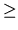

N
- (input) INTEGER
The number of columns of the matrix A. N 
0.
- A
- (input/output) REAL array, dimension (LDA,N)
On entry, the m-by-n matrix to be factored.
On exit, the factors L and U from the factorization
A = P LU; the unit diagonal elements of L are not stored. LU; the unit diagonal elements of L are not stored.
|